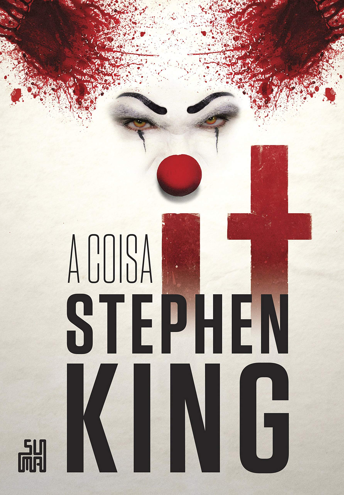
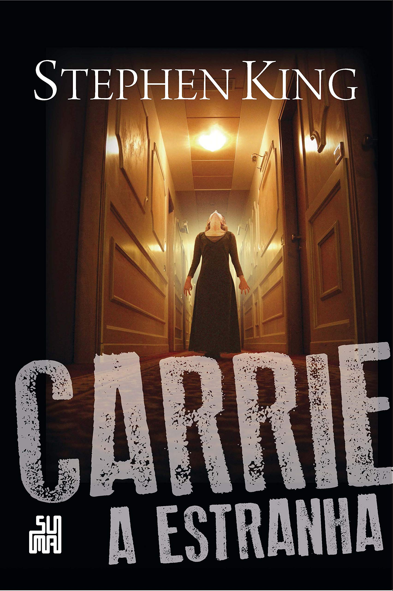

It - A Coisa

No verão de 1958, Bill, Richie, Stan, Mike, Eddie, Ben e Beverly, sete pré-adolescentes, moradores da fictícia cidade de Derry,
no Maine, estão de férias e se deparam com um monstruoso ser milenar, que reaparece a cada 27 anos para se alimentar de crianças.
Veja mais
Sob a Redoma
Em um dia normal de outono, na cidade de Chester's Mill, Maine, a cidade é inexplicável e
repentinamente isolada do resto do mundo por um campo de força invisível.
Aviões colidem e caem do céu em chamas, a mão de um jardineiro é cortada na "cúpula",
as pessoas são separadas de suas famílias e os carros explodem com o impacto.
Ninguém pode imaginar o que essa barreira é, de onde veio, e quando — ou se — ela irá embora.
Veja mais
Carrie

Carrie é uma jovem tímida, perseguida pelos colegas, professores e
impedida pela mãe de levar uma vida comum. No dia de sua formatura,
descobre que possui poderes telecinéticos quando os jovens mais populares
da escola a humilham diante de todos.
Veja mais